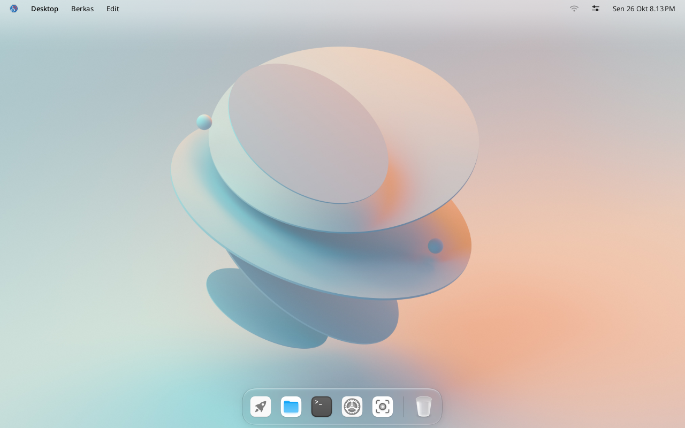
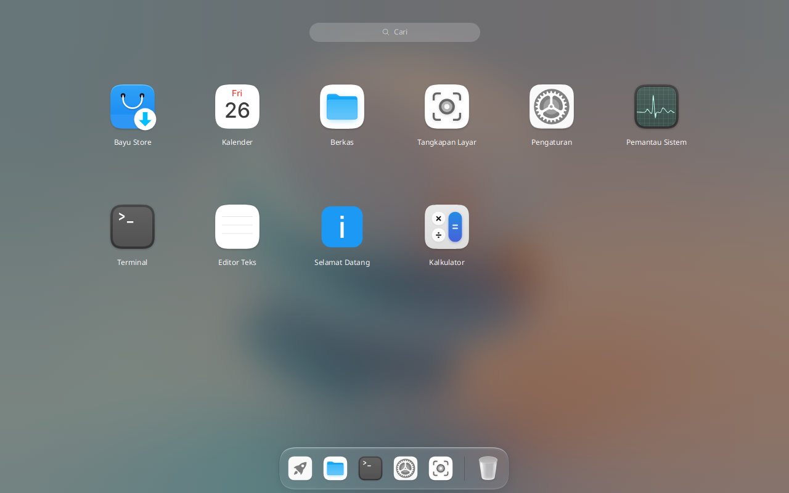
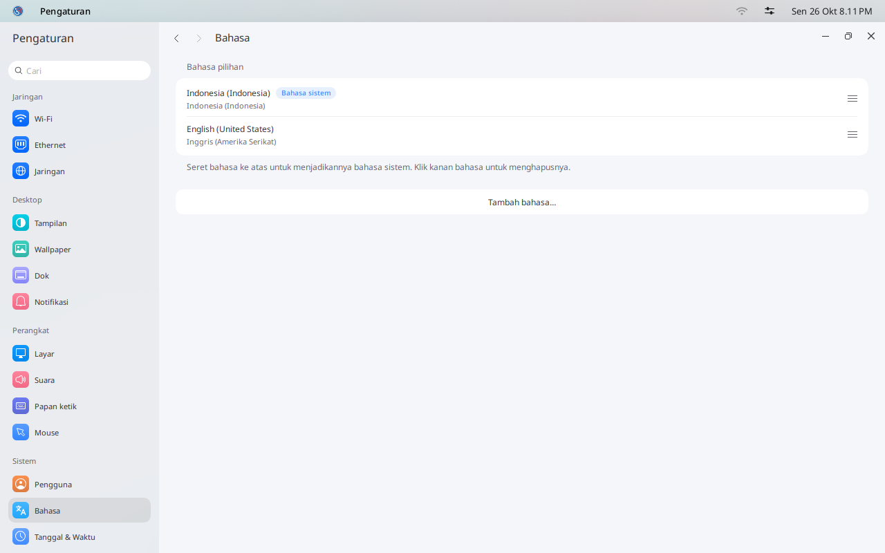

Dokumentasi IGN 26
Memakai desktop
Kenali bagian-bagian Bayu: bilah atas, dok, peluncur, dan Pengaturan.


Bilah atas
Di kiri ada logo IGN, lalu nama aplikasi yang sedang di depan dan menu aplikasi itu. Klik logonya untuk membuka Pengaturan, Kunci layar, Keluar, Mulai Ulang, dan Matikan.
Di kanan ada ikon jaringan, Pusat Kontrol, dan jam. Pusat Kontrol berisi sakelar cepat untuk Wi-Fi, Mode Gelap, Jangan Ganggu, kamera, dan mikrofon.
Dok
Dari kiri ke kanan: Peluncur, Berkas, Terminal, Pengaturan, Tangkapan Layar, dan Tempat Sampah. Aplikasi yang Anda buka mendapat ikonnya sendiri sampai ditutup. Titik di bawah ikon berarti aplikasinya sedang terbuka.
Peluncur
Klik ikon roket untuk melihat semua aplikasi yang terpasang. Klik salah satunya untuk membukanya. Tekan Esc untuk menutup peluncur.


Pengaturan
Buka Pengaturan dari dok. Halamannya dikelompokkan menjadi Jaringan, Desktop, Perangkat, dan Sistem.
Mengganti bahasa
Di Pengaturan, buka Bahasa.

Klik Tambah bahasa… lalu pilih bahasanya.
Seret bahasa itu ke paling atas daftar. Bahasa paling atas menjadi bahasa sistem.
Klik logo di pojok kiri atas, pilih Keluar, lalu masuk lagi. Setelah itu aplikasi memakai bahasa yang baru.

Berikutnya: memasang aplikasi.